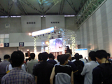
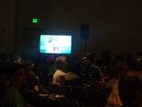

| �� �L�����z�r�Q�O�O�S |
2004�N08��25���i���j |
| |
�L�����z�r�Q�O�O�S�I���܂����B����͖{���ɂ̂�т��点�Ă��������܂����B�ł��ǖʂ����ς��̃}���G���͈����Ȃ������ł���ˁH���\�f�W�J���Ŏʐ^�B���Ă����l�������������B
�Ƃ������ƂʼnԉE���́A�L�����V���[�A�R�~�P�A�L�����z�r�ƉẴC�x���g�͂قڃt���ŎQ�������Ă��������܂����B���z�����������܂����F�l�ǂ������肪�Ƃ��B
��`�S���@�W�F�l�I�[���@�s�@ |
|
|
| �� �L�����z�r�Q�O�O�S |
2004�N08��18���i���j |
| |
�@
�R�~�P�����I���܂����B�����h���[�u�u�[�X�ɗV�тɗ��Ă��ꂽ�F���肪�Ƃ��B�O�b�Y���Ă��ꂽ�l�͖{���ɂ��肪�Ƃ��B�Ƃ������A���T���͂�
���܂������A�L�����z�r�Q�O�O�S�ł��B�ԉE�����u�}篁v�Q�����鎖�ɂȂ�܂����B�|�X�g�J�[�h�����킢�����o���z���Ă���܂��B�v���Y�}���j�^�[�Ŗ{
�ҏ�f������Ă��܂��B����͂̂�с`�`��Ƃ���Ă��܂��̂ŁA���܂���ĂāA������Ɣ�ꂽ�Ȃ��Ǝv������|�X�g�J�[�h�ł����炢�ɗ��Ă��������B
�u�[�X�ԍ��́@�`-�Q�P�ł��B��낵���ˁB |
|
|
| �� �R�~�P |
2004�N08��11���i���j |
| |
�C
�N�������A���������R�~�P����B�������Ԃɍ���Ȃ���A�ǂ����悤�E�E�E�Ƌ�s�������Ă��͂��܂�܂���B�d�}�[�t�B�[�����K���āA�c��48���ԂłȂ�
�Ƃ����邵������܂���B���i�̓j���[�X�y�[�W�Ɍf�ڂ��Ă���܂����A���̃N���A�|�X�^�[�ׂ̈̕`�����낵�ł��B�t�@���̊F�l�A�����Ă��������ˁB
���A�u�[�X�Ŕz�z����|�X�g�J�[�h�ł����A�S��ޏW�߂�̂͂�����Ɠ�Փx�͍�����������܂��A�e�G��1000���ȏ�͂���܂��̂ŁA�ǂ��������ĉ����������A���܂��ĒD���������肵�Ȃ��悤�ɂ��肢���܂��ˁB�}�i�[������Ċy�����C�x���g�ɂ������Ǝv���܂��B
����ł͂����ŊF������܂��傤�B�ǂ����X�������肢���܂��B
��`�S���@�W�F�l�I�[���@�s�@�i�������Ă܂ł͂���Ȋ����Ŏd���ł��E�E�E�Ƃقفj |
|
|
| �� ���肪�Ƃ��������܂��� |
2004�N07��26���i���j |
| |
��
���L�����N�^�[�V���[�Q�O�O�S/�ԉE���C�x���g�����I�����܂����B���Q�����������܂����t�@���̊F�l���肪�Ƃ��������܂����B�c�������b��c����ɂ͑O
�����Ă�����Ă̏����A�l��X�^�b�t����5���ɓ������o�ĂƂ��������ŁE�E�E�F����������Ƒ��N�����ĂƂ����Ƃ���ő�ς������Ǝv���܂��B�[�ӁA�[�ӂ�
�������܂��B�܂��͌��܂ŁB
��`�S���@�W�F�l�I�[���@�s
���̓R�~�P�B���菤�i��̔��A�m�x���e�B���z��܂��̂Ń����h���[�u�u�[�X�֗V�тɗ��Ă��������ˁB |
|
|
| �� recontre |
2004�N07��22���i�j |
| |
�@���T���ł��B�����A�����A�����ł��B����͂͂��߂�
�}���G��/�c�������{�Łi�ȑO�A��p�ʼn̂��Ă�������̂ŁjOP�e�[�}���̂��܂��B�M�d�ȃ`�����X�ł��B
�������ł������z�����������ˁB�X�������肢���܂��I
��`�S���@�W�F�l�I�[���@�s |
|
|
| �� �����[�X����I |
2004�N07��07���i���j |
| |
�k
�Ăōő�K�͂̓��{�̃A�j���[�V�����̌��{�s�u�A�j���d�w�o�n�Q�O�O�S�v���V���Q���`�T���J���t�H���j�A�B���T���[���X�A�A�i�n�C���E�R���x���V�����E�Z
���^�[�ŊJ�Â���܂������A���̃A�j���d�w�o�n�ŃA�����J�ł̉ԉE�����C�h���̂c�u�c�̃����[�X�̔��\���s���܂����B�����Ȃǂ͂܂����ꂩ��ł����A�A
�����J�̃t�@�����ԉE�����y���ނ��Ƃ��ł����ł��ˁB�Ȃ��킭�킭���܂��B
��`�S���@�W�F�l�I�[���W���p���@T
�ʐ^�Â��ł����A�F�l�I���t�r�`�̃p�l���ł̉ԉE���̃����[�X�̔��\���B�f���ɓB�t���̃A�����J�̃A�j���t�@�������������ς��ł����I�@ |
|
|
| �� �m���X�N�����u���I |
2004�N06��25���i���j |
| |
�c�u�c�����ɂȂ�܂����B
���C�ɐV�h�̖^�V���b�v�ŒI�̖ڗ��Ƃ���ɍɂ������肵�āB
���肵���搶�`�����낵BOX���炵���ł��B���Ђ��X�ł������������܂��B
����Ƒ�ȏ���Y��Ă��܂����BAT-X����ł̕����ł����A�P�b�̓m���X�N�����u���i�������ł݂��j�Ȃ�ł���B������16�F00��27�F00�ɕ�������܂��B�X�J�p�[�����҂݂̂Ȃ��܂͂��Ѓ`�����l�����`�s�|�w����ցI
��`�S���@�W�F�l�I�[���@�s |
|
|
| �� �A�j���s�u�@�d�c |
2004�N06��24���i�j |
| |
�j���[�X�Ɍf�ڂ��Ă���܂����A�d�c�u�����b���܂��I�v�̂o�u�f�������T�������̃A�j���s�u�̂d�c�ŃI���G�A�[����܂��i���Ԃ�V�������炢�܂Łj�B���傤�ǎГ����C�A�E�g�ύX�ȂǂŃ`�F�b�N���[���g�p�ł���
�����Ђ��痈���f�ނ����̂܂܃A�j���s�u�ɔ[�i���Ă���܂��̂Ŗl�͂Ԃ����Ⴏ�f���݂Ă���܂���B
�ꎋ���҂Ƃ��āA��������҂��Ă���킯�ł��B�y���݂ł��ˁA�ǂ��ǂ��B
��`�S���@�W�F�l�I�[���@�s |
|
|
| �� �����l�ł��� |
2004�N06��21���i���j |
| |
��ʑg�͎����I������Ƃ���ł��ˁB
1�N�[�������Ƃ����Ԃ������������������ł��傤���H
25���ɂ͂c�u�c1������������܂��̂ŁA���������v���C�o�b�N���Ă݂Ă��������B
�撅�\����T�͑܂Ƃ�����C���X�g�W�ł��B�`�����낵�̃C���X�g������̂Ő����߂ɂ��w�����������I
�i�`���b�Ƃ������J�����Ⴄ��j
��`�S���@�W�F�l�I�[���@�s�i�X�^�b�t���L���X�g�̊F�l�A�{���ɂ����l�ł����j |
|
|
| �� �ŏI��ڑO |
2004�N06��16���i���j |
| |
�@
�G���p��12�b�̃J�b�g�����炢�܂����B����Ő�o����Ƃ��I��肩�Ǝv���Ƃ�����Ƃ��т����ł��B�V�����b���̃f�[�^�[��������Ċe�J�b�g���Ԃ���
�݂Ă����ƁA���̃}���G���̕\��A�͂͂����Ă���Ȃ��Ƃ��R�m�G����̂��̓����������Ȃ��A�Ƃ��F�X�������鎖��������i�ł����B���ꂩ��DVD���o���
�ŁA�F������P�J�b�g�A1�J�b�g����[���ςĂ݂Ă��������B�I���G�A�[�ł͋C�Â��Ȃ��������͂����o�������ł���Ǝv���܂���B
P.S�@�L�����N�^�[�V���[�����Ȃ�ƂȂ��͍��m�͂łĂ��܂����A�����ɂ͂������傢�҂��Ă��������ˁI
��`�S���@�W�F�l�I�[���@�s |
|
|
���O�̃y�[�W / �����̃y�[�W
�y�[�W�ړ� / [
1] [
2] [
3] [
4]